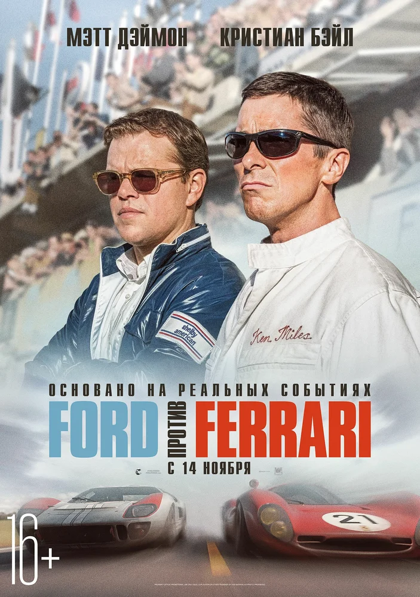

В начале 1960-х Генри Форд II принимает решение улучшить имидж компании и сменить курс на производство более модных автомобилей.
После неудавшейся попытки купить практически банкрота Ferrari американцы решают бросить вызов итальянским конкурентам на трассе и выиграть престижную гонку 24 часа Ле-Мана.
Чтобы создать подходящую машину, компания нанимает автоконструктора Кэррола Шэлби, а тот отказывается работать без выдающегося, но,
как считается, трудного в общении гонщика Кена Майлза. Вместе они принимаются за разработку впоследствии знаменитого спорткара Ford GT40.